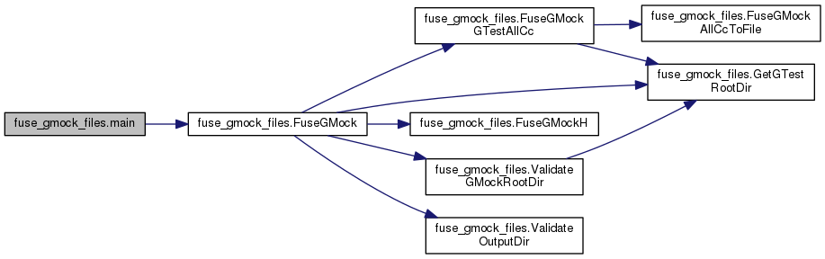

YOUR NAME's CS132 programs
Main Page
Namespaces
Classes
Files
def fuse_gmock_files.main
(
)
Definition at line
226
of file
fuse_gmock_files.py
.
References
FuseGMock()
.
226
def
main
():
227
argc = len(sys.argv)
228
if
argc == 2:
229
# fuse_gmock_files.py OUTPUT_DIR
230
FuseGMock
(DEFAULT_GMOCK_ROOT_DIR, sys.argv[1])
231
elif
argc == 3:
232
# fuse_gmock_files.py GMOCK_ROOT_DIR OUTPUT_DIR
233
FuseGMock
(sys.argv[1], sys.argv[2])
234
else
:
235
print
__doc__
236
sys.exit(1)
237
238
fuse_gmock_files.main
def main()
Definition:
fuse_gmock_files.py:226
fuse_gmock_files.FuseGMock
def FuseGMock(gmock_root, output_dir)
Definition:
fuse_gmock_files.py:215
Here is the call graph for this function:

fuse_gmock_files
Generated on Mon Oct 21 2019 15:37:36 for YOUR NAME's CS132 programs by
1.8.11
 Here is the call graph for this function:
Here is the call graph for this function: 1.8.11
1.8.11